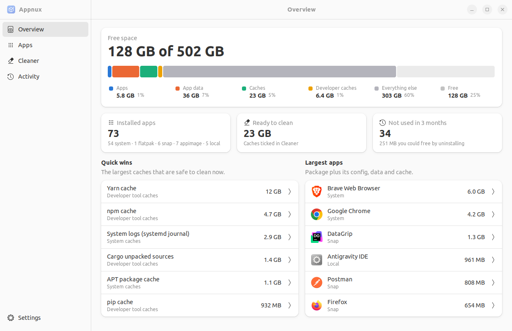
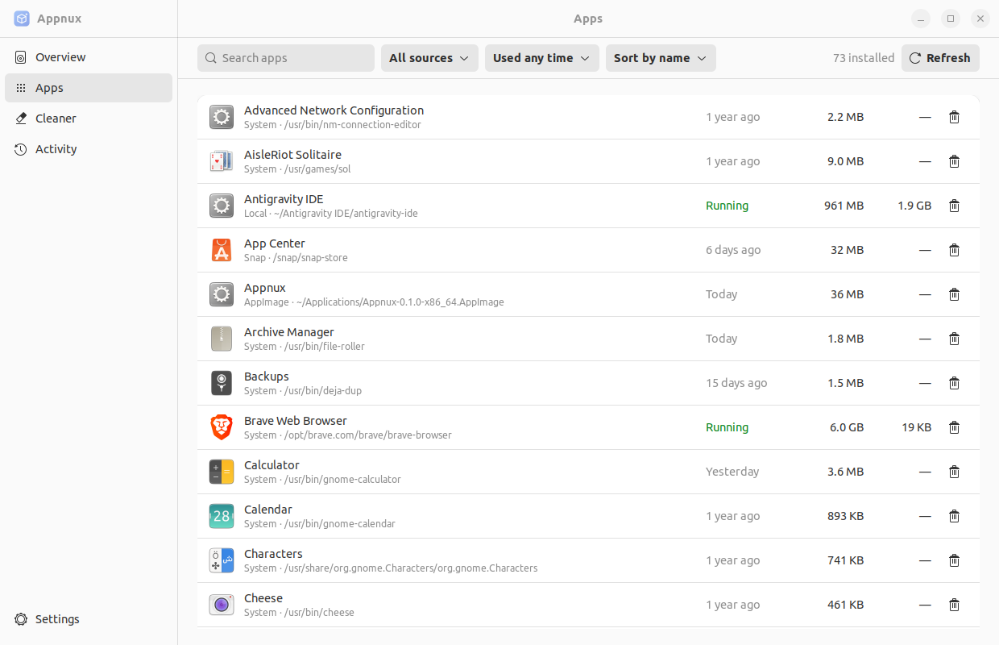
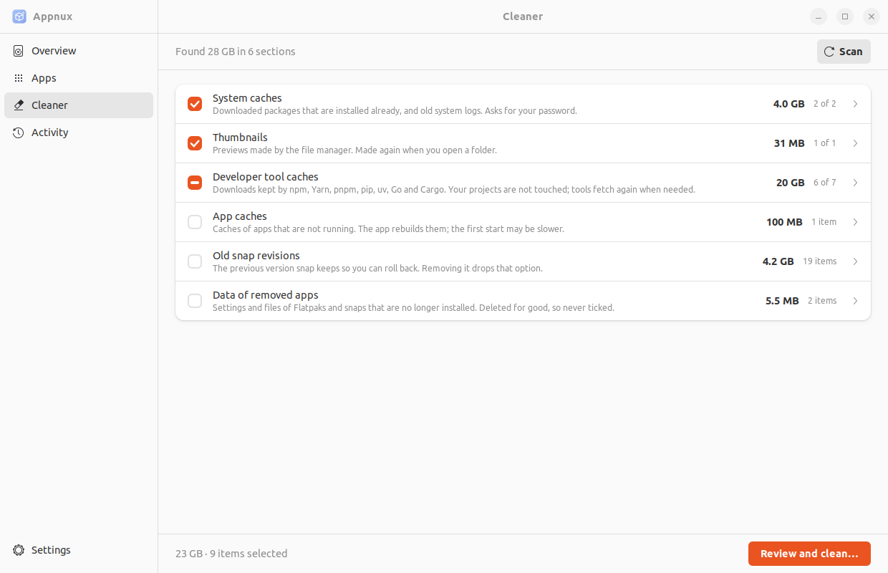
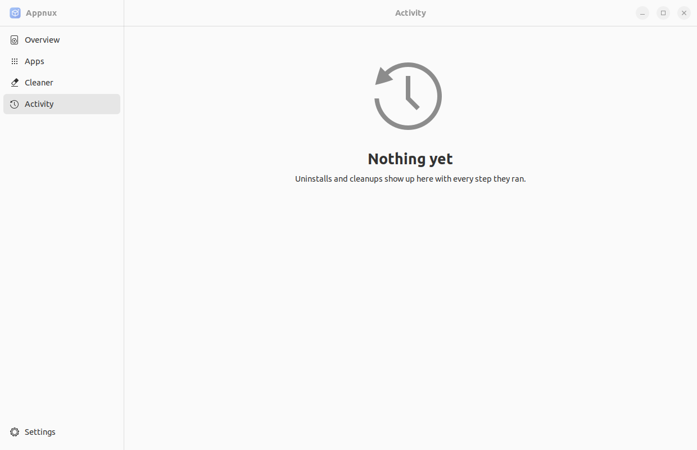
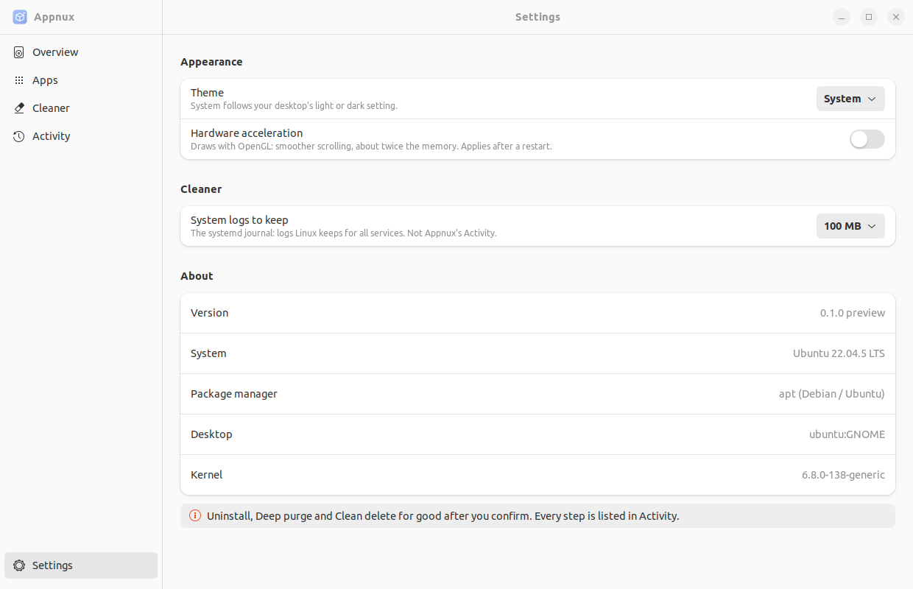

Apps arrive four ways: system packages, Flatpak, Snap and AppImage files you downloaded. Appnux lists them all in one window, shows where each one lives, and removes it cleanly, leftovers included.

Each format keeps its apps somewhere else, and none of them cleans up after itself. Appnux reads all four, with the tools each one already uses.
Read from dpkg, pacman or rpm. Shows the program the package runs, like /usr/bin/vlc.
User and system installs, from ~/.local/share/flatpak or /var/lib/flatpak, with their data in ~/.var/app.
Every snap with its mount in /snap, its data in ~/snap and old revisions kept for rollback.
Files you downloaded and clicked, wherever you keep them: Downloads, Desktop, Applications or anywhere in home.
Every row says the format and the path. One click opens the folder in your file manager.
From GNOME's app history, the program's access time and the app's own folders. Filter by "Not used in 3 months".
The package plus its config, data and cache in your home folder, with hard links counted once.
Which apps are running and how much memory each one uses, summed over all its processes.
Uninstall keeps your settings. Deep purge also deletes what the app left behind, each folder marked Sure, Likely or Unsure.
Package caches, old logs, thumbnails and developer tool caches. Never your projects, Docker or your files.
Built with GTK4 and libadwaita, so it looks and behaves like the rest of your desktop, and follows your accent colour and theme.

Search, filter by format or by last use, sort by size or memory. Remove from the row, or open the details.

Sections fold open to show each item. Only what is safe to remove is ticked for you.
Where your disk space went, and the largest caches you can clean right now.

Every uninstall and cleanup, with each step it ran and whether it worked.

Theme, hardware acceleration and how much of the system log to keep.
The only cost of cleaning should be time: a slower next install or first start. Where a tool has its own clean command, Appnux runs that command.
node_modules and Cargo target · your projects need them~/.ssh, ~/.gnupg, keyrings, your documentsEvery path is checked before it is removed: inside your home folder, inside the folders Appnux cleans, never one of those folders itself, never through a symlink. No shell commands are built.
System work goes through PolicyKit in one prompt. Before removing a package, the helper runs the package manager's dry run again and refuses if the result changed since you approved it.
A utility should not cost more than the space it saves. Measured on Ubuntu 22.04 with 73 apps installed.
The web version ran three processes (app, WebKit page, WebKit network). Appnux runs one.
Needs GTK 4.6 and libadwaita 1.1 or newer: Ubuntu 22.04+, Debian 12+, Linux Mint 21+, Fedora 36+, Arch and its derivatives.
Install the .deb from the latest release. It includes the PolicyKit rule for system cleanup.
sudo apt install ./appnux_0.1.0_amd64.deb
Download, make it executable, run. GTK4 and libadwaita are inside.
chmod +x Appnux-0.1.0-x86_64.AppImage ./Appnux-0.1.0-x86_64.AppImage
Rust 1.92+ and the GTK4 / libadwaita development files.
git clone https://github.com/MinduLabs/Appnux cd appnux cargo build --release -p appnux ./target/release/appnux
| Removing | What Appnux runs |
|---|---|
| System package | apt-get remove / purge, pacman -R / -Rns, dnf remove, after a dry run |
| Flatpak | flatpak uninstall (with --delete-data for Deep purge) |
| Snap | snap remove (with --purge for Deep purge) |
| AppImage | Deletes the AppImage file and its menu shortcut |